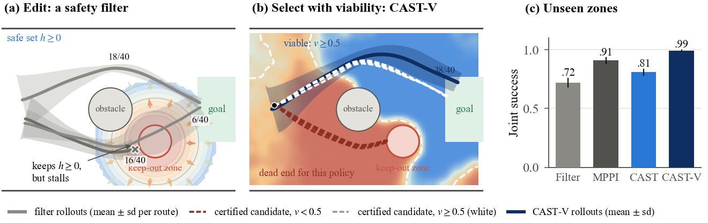
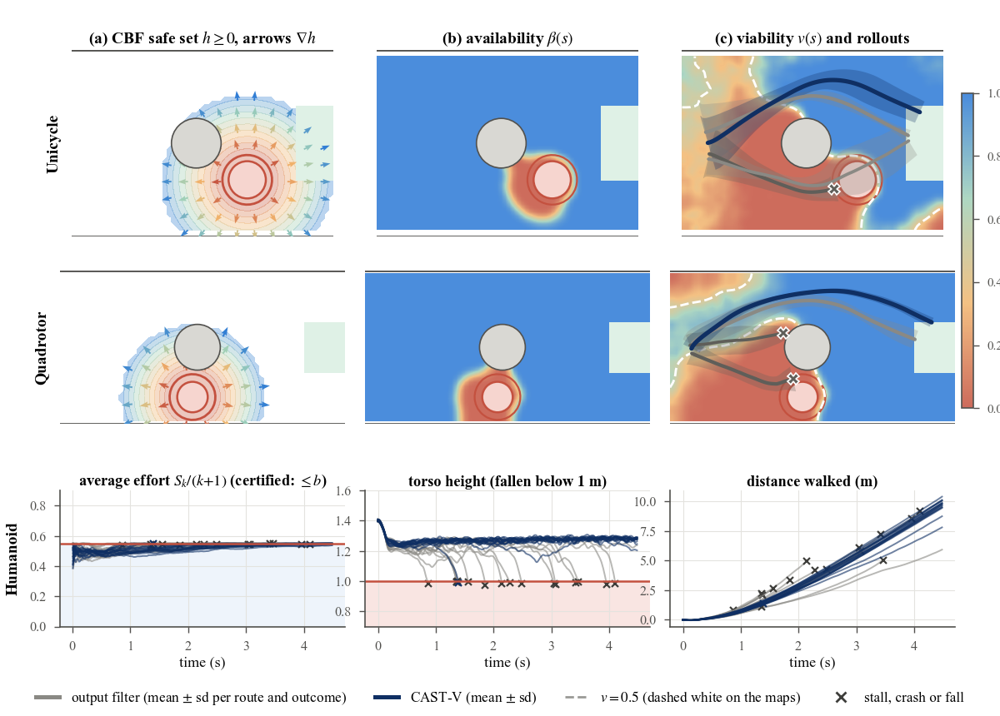
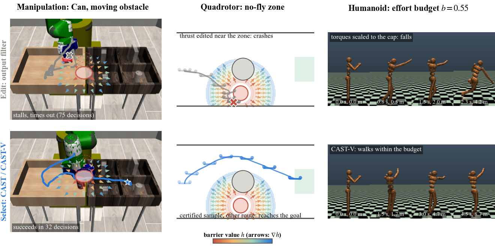
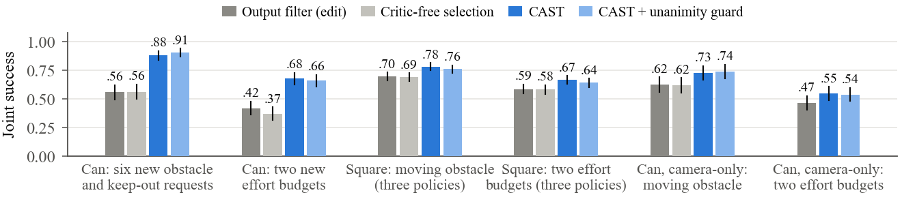
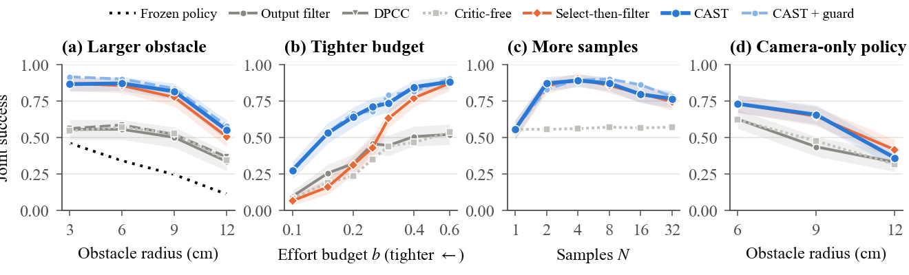
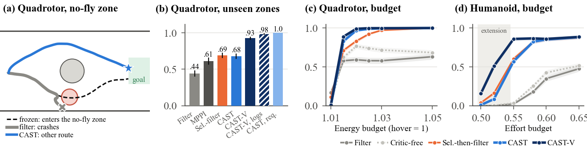

Certify, Then Select
Viability-Aware Runtime Steering of Frozen Diffusion Policies
SUPSI-IDSIA, USI, Lugano, Switzerland · Politecnico di Milano, Milan, Italy
L4DC 2027
Being safe now does not mean remaining capable of acting safely. Can we enforce a new constraint while preserving not only immediate safety and task performance, but also the frozen generative policy’s future ability to act safely?
CAST moves safety filtering from correcting individual actions toward selecting behaviours that preserve future safe control authority.
Method
A diffusion policy turns random noise into a short sequence of future actions, an action chunk, so each observation yields a distribution of plausible chunks. At run time the robot meets a constraint its demonstrations never contained, a request: a person reaching across the table, a keep-out volume, a limit on motor effort. A safety filter edits the policy’s action to satisfy it; the edit ignores the task, and a large edit can leave the policy where it cannot continue.

CAST: certify, then select
At every decision, with the policy frozen:
- Sample. Draw N latents and decode N chunks a_1,\dots,a_N in one batch (we use N=8).
- Certify. Keep the chunks for which a discrete-time barrier condition holds over the chunk and a braking/holding backup, with margins for predictor and forecast errors: h(p_{kT+j}) \ge (1-\alpha)^j \max(h_k,0) + \text{margins}, \alpha\in(0,1]; for an effort budget, S_k + c(a) \le b\,(k+1).
- Select. Execute the certified chunk that a learned value ensemble ranks highest.
- Fallback. If no chunk is certified, execute an output filter’s correction of a sample, or the backup.
No retraining of the policy; one batched sampling per decision.
CAST-V: keep the policy able to act
A certified chunk can lead to a state from which the frozen policy rarely samples a certified continuation, for example in front of a zone that blocks the route it has started. CAST-V scores each certified candidate by its policy-conditioned viability: the fraction of M continuations of the critic-free certified controller, run for L decisions from the candidate’s end state, that keep finding a certified sample. It keeps the candidates with v \ge v_{\min}=0.5 and lets the critic choose among them. Viability can be estimated with a model, with a finite-sample guarantee, or learned from the controller’s own logs, with no model-based lookahead at deployment.

Theoretical results
Let \pi be the frozen policy, \mathcal F the set of certified chunks, \beta=\pi(\mathcal F\mid o) the feasible fraction, and \pi_{\mathcal F} the policy conditioned on \mathcal F.
Theorem 1 (Safety). Under the predictor and forecast error bounds, the request holds on every step of every certified chunk that is executed, for any number of samples, any critic and any selection rule. If the hazard is exogenous and calibration and deployment episodes are exchangeable, one conformal calibration bounds the forecast part of the risk over a whole episode, for every controller at once.
The critic can be arbitrarily wrong without making a certified step unsafe.
Theorem 2 (Distance to the policy). Among all action distributions that produce only certified chunks, \pi_{\mathcal F} is the unique closest to \pi in relative entropy, at \mathrm{KL}(\pi_{\mathcal F}\,\|\,\pi)=\log(1/\beta). Whenever the batch contains a certified sample, the law q of the chunk CAST executes satisfies, for any critic and any rule, \mathrm{KL}(q\,\|\,\pi_{\mathcal F}) \le \log N, whereas a minimal-norm projection onto the boundary can produce a singular action distribution.
Selecting among the policy’s own samples stays close to what the policy would do; editing need not.
Theorem 3 (Closed-loop gain of ranking). An exact identity splits the gain of ranking over critic-free certified selection into three levers: the availability of certified samples, the spread of their values, and the target of the critic (how well its ranking matches the closed-loop value); a last term grows with N when the critic is weak.
Ranking helps only when certified samples exist, differ in value, and the critic can tell them apart.
Proposition 4 (Generative viability). Suppose s_0\in\mathcal K and \beta_{\mathcal K}(s)\ge\beta_{\min}>0 on \mathcal K. If a controller executes, whenever its batch contains one, a certified sample that leads into \mathcal K, then the probability that some batch among the first H decisions contains none is at most H(1-\beta_{\min})^N; otherwise every executed chunk is certified and the state stays in \mathcal K.
\mathcal K is a generative analogue of a viability kernel: it depends on the frozen policy, not only on the dynamics.
Proposition 5 (Estimated viability). With M continuations on fresh latents and a threshold v_{\min}\in(v_{\rm lo},v_{\rm hi}], CAST-V executes a certified chunk with viability v\ge v_{\rm lo} except with probability at most (1-\gamma(s))^N+\varepsilon_M, where \varepsilon_M\le N e^{-2M(v_{\min}-v_{\rm lo})^2}+e^{-2M(v_{\rm hi}-v_{\min})^2}.
Results
Frozen policies, N=8 samples, paired scenarios; brackets are paired bootstrap 95 % intervals. The main studies were preregistered.
Manipulation: robomimic Can under five requests
Joint task-and-request success, 200 paired episodes each (last column: largest violation rate).
| Method | R1 moving obstacle | R2 fast obstacle | R3 effort budget | R4 ceiling + wall | R5 pillar | max. viol. (%) |
|---|---|---|---|---|---|---|
| Frozen policy | 0.34 | 0.28 | 0.00 | 0.08 | 0.17 | 73.5 |
| Output filter (CBF-QP) | 0.61 | 0.49 | 0.37 | 0.47 | 0.53 | 2.5 |
| In-denoising projection | 0.60 | 0.51 | 0.39 | 0.45 | 0.52 | 1.0 |
| DPCC | 0.58 | 0.57 | 0.51 | 0.40 | 0.53 | 1.5 |
| Latent noise optimisation | 0.59 | 0.43 | 0.26 | 0.42 | 0.47 | 1.5 |
| Critic-free selection | 0.60 | 0.53 | 0.39 | 0.47 | 0.49 | 1.5 |
| Select-then-filter | 0.89 | 0.81 | 0.46 | 0.72 | 0.86 | 1.5 |
| CAST | 0.89 | 0.85 | 0.70 | 0.79 | 0.86 | 0.5 |
| CAST + guard | 0.90 | 0.86 | 0.70 | 0.80 | 0.89 | 0.5 |

New requests, frozen models
On requests fixed in advance and evaluated once, CAST gains +0.32 [+0.26, +0.39] over the filter on six new Can geometries and +0.09 [+0.05, +0.13] on Square (positive for each of three policies); across ten settings it beats output filters and critic-free selection in nine.

When does selection help? The three levers
Moving each lever of Theorem 3 on Can: CAST keeps its lead as the obstacle grows; under a tight effort budget certifying before ranking decides (0.53 against 0.16 for select-then-filter at b=0.15); two to four samples give the whole gain.

Blocked routes, dynamic systems, and viability from logs
Unicycle, unseen keep-out zones (3 policies × 500 scenarios): CAST 0.81 → CAST-V 0.99, with the task critic and no retraining; more samples do not replace the lookahead (CAST with N=1024: 0.14).
Viability learned from logs, no model-based lookahead at deployment: 0.95 on the unicycle (+0.14 over CAST), within 0.03 of the model under 15–30 % actuator error; on certified candidates it never saw executed, it ranks the simulated viability with AUC 0.98. On the quadrotor it reaches 0.98, above model-based CAST-V (0.93) and MPPI with the exact model (0.61).
Quadrotor and humanoid: the filter keeps a no-fly zone but crashes the vehicle (0.44); CAST 0.68, CAST-V 0.93. Under a humanoid effort budget, the filter’s scaled torques make it fall; CAST gains +0.53 over the filter and CAST-V a further +0.09.

Citation
@inproceedings{moroncelli2027cast,
title = {Certify, Then Select: Viability-Aware Runtime Steering of Frozen Diffusion Policies},
author = {Moroncelli, Angelo and Roveda, Loris},
booktitle = {Learning for Dynamics and Control (L4DC)},
year = {2027}
}